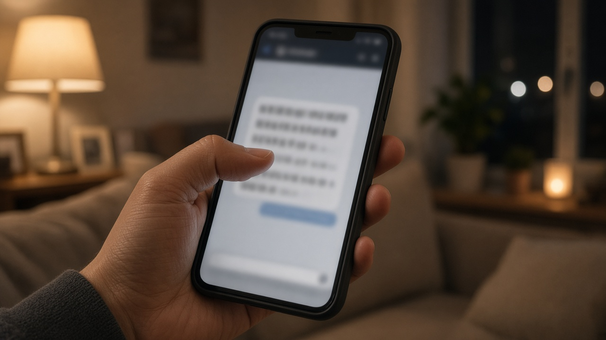
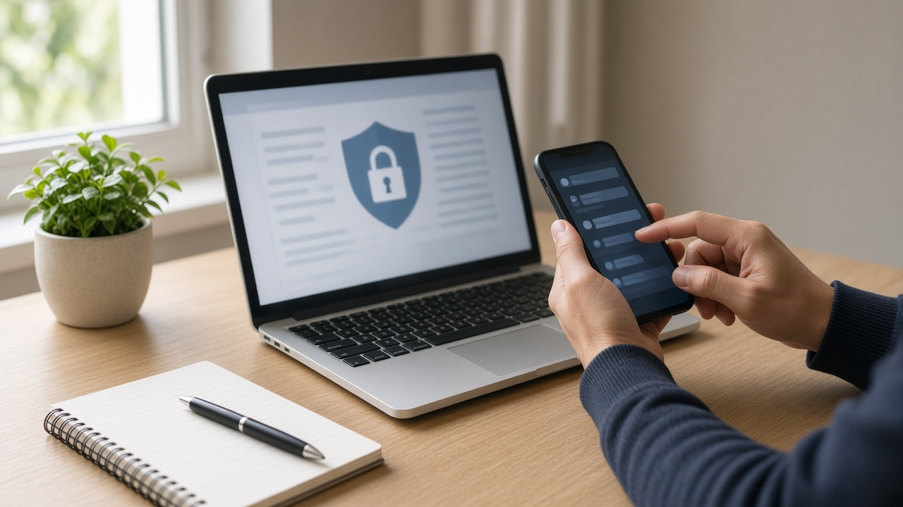

금융사 개인정보 유출 뒤 오는 보상 안내 문자, 링크 누르기 전에 안심차단 3종과 노출자 등록부터 하세요

요즘 금융회사 개인정보 유출 소식이 잇따르면서 내 정보도 빠져나간 건 아닌지 걱정하시는 분이 많아요.
그런 와중에 유출 피해 고객 대상 보상 안내, 특별 저금리 대출 같은 문자까지 오면 혹시 진짜일까 싶어 손이 가기 쉽죠.
오늘은 금융당국이 10월 6일에 낸 소비자경보 내용을 바탕으로, 이런 연락을 어떻게 가려내는지와 지금 바로 걸어 둘 수 있는 차단 장치들을 차례대로 정리해 볼게요.
유출 보상이나 특별대출을 앞세운 연락은 먼저 의심하세요
금융위원회와 금융감독원은 2026년 10월 6일 금융권 개인정보 유출을 틈탄 사기에 대해 주의 단계 소비자경보를 냈어요.
당국 설명으로는 비밀번호와 일회용 비밀번호 정보는 유출되지 않았지만, 이름과 주소처럼 이미 빠져나간 정보를 엮어 그럴듯하게 접근하는 사기가 걱정된다고 해요.
대표적인 수법은 네 가지예요. 유출 피해 고객 보상이나 금리 우대를 내세워 인터넷 주소를 누르게 하는 방식, 싼 대출로 갈아타려면 기존 대출부터 갚으라며 사기범 계좌로 돈을 보내게 하는 방식, 신용점수를 올려 준다며 먼저 돈을 넣으라는 방식, 대출 서류 작성이나 보안 점검을 핑계로 원격제어 앱이나 악성 앱을 깔게 하는 방식이에요.
특히 상대가 내 소득이나 대출 한도를 정확히 말하더라도 그것만으로 진짜 금융회사라고 믿으면 안 된다고 당국은 강조했어요.
금융회사와 당국이 절대 하지 않는 일을 기억해 두세요
가려내는 기준은 생각보다 단순해요.
금융당국과 금융회사는 전화나 문자로 비밀번호나 인증번호를 묻지 않고, 피해보상이나 계좌 보호를 이유로 돈을 옮기라고 하지 않아요.
대출 과정에서 어떤 명목으로든 먼저 돈을 넣으라거나 앱을 설치하라고 하지도 않고요.
유출 안내나 보상 안내를 하면서 인터넷 주소를 보내지도 않으니, 출처가 불분명한 문자 속 주소는 누르지 말고 지우시면 돼요.
내 정보가 정말 유출됐는지는 문자에 적힌 번호가 아니라 그 금융회사의 공식 홈페이지나 앱, 원래 알고 있던 고객센터 대표번호로 직접 확인하세요.
휴대폰에 주민등록번호나 계좌 비밀번호, 신분증 사진을 저장해 두셨다면 이번 기회에 지워 두는 것도 당국이 권하는 방법이에요.
금융거래 안심차단 3종으로 내 명의 대출과 계좌 개설을 막아 두세요
악성 앱 등으로 정보를 빼낸 뒤 내 이름으로 대출을 받아 가는 피해도 걱정되는데요, 이걸 미리 막는 장치가 금융거래 안심차단서비스예요.
세 가지가 있어요. 첫째는 신용대출, 카드론, 신용카드 발급, 할부금융 같은 내 명의 여신거래를 막는 여신거래 안심차단으로 2024년 8월부터 시행됐어요.
둘째는 대포통장으로 쓰일 수 있는 비대면 계좌 개설을 막는 비대면 계좌개설 안심차단으로 2025년 3월부터, 셋째는 오픈뱅킹으로 계좌를 몰래 조회하거나 이체하는 것을 막는 오픈뱅킹 안심차단으로 2025년 11월부터 시행됐어요.
신청은 거래하는 금융회사 영업점을 찾아가거나 계좌정보통합관리서비스인 내계좌한눈에, 또는 은행 앱에서 할 수 있어요.
막아 둔 뒤에도 필요하면 영업점에서 언제든 해제할 수 있고, 해제하면 바로 거래가 되며 다시 가입하는 것도 가능해요.
금융위원회 자료에 따르면 2026년 8월 말 기준으로 약 700만 명이 이 서비스에 가입했다고 해요.

개인정보노출자 등록과 휴대폰 가입 제한까지 걸어 두면 더 든든해요
금융감독원 금융소비자정보포털 파인에 있는 개인정보노출자 사고예방시스템에 내 정보를 등록하는 방법도 있어요.
등록한 정보는 금융회사에 실시간으로 공유되고, 그 뒤로는 내 명의의 신규 계좌 개설이나 신용카드 발급 같은 거래가 제한돼요.
신분증을 잃어버렸거나 보이스피싱으로 정보가 새어 나갔다고 의심될 때 특히 도움이 되고, 문의는 금감원 콜센터 1332로 하시면 돼요.
휴대폰을 내 이름으로 몰래 개통하는 것도 걱정된다면 한국정보통신진흥협회의 명의도용방지서비스 엠세이퍼에서 가입사실 현황을 조회하고, 온라인 신규 가입을 미리 막는 가입제한을 걸어 둘 수 있어요.
아이디와 비밀번호가 새어 나갔는지 궁금하다면 개인정보보호위원회와 한국인터넷진흥원이 운영하는 털린 내 정보 찾기 서비스를 써 보세요. 회원가입 없이 이메일 인증 뒤 조회하는 방식이고, 같은 이메일로는 하루 세 번까지 쓸 수 있어요.
개인정보보호위원회도 10월 19일 안내에서 쓰지 않는 계정은 탈퇴하고, 2단계 인증을 켜고, 같은 비밀번호를 쓰는 다른 사이트까지 함께 바꾸라고 당부했어요.
이미 눌렀거나 돈을 보냈다면 이 순서로 움직이세요
문자 속 주소를 눌렀거나 앱을 깔았다면 더 이상 정보를 넣지 말고, 악성 앱이나 개인정보 유출이 의심될 때는 국번 없이 118로 상담받을 수 있어요.
의심 문자는 카카오톡 보호나라 채널의 스미싱 확인 서비스에 붙여 넣어 분석해 볼 수 있어요.
보이스피싱이나 스미싱 피해가 의심되면 경찰청 전기통신금융사기 통합대응단 1394로 상담하고요.
이미 돈을 보냈다면 바로 112나 돈을 보낸 금융회사 고객센터에 연락해 지급정지를 요청하세요. 지급정지는 그 계좌에서 돈이 더 빠져나가지 않게 막는 조치예요.
오늘 내용은 10월 31일 기준 금융위원회, 금융감독원, 개인정보보호위원회 공식 안내를 정리한 일반 정보예요. 실제 유출 여부와 보상 내용은 해당 금융회사 공식 창구에서 꼭 직접 확인해 보세요.
참고 자료 금융위원회 금융감독원 소비자경보 2026년 26호 2026년 10월 6일, 연합뉴스 2026년 10월 6일 보도, 개인정보보호위원회 보도자료 2026년 10월 19일, 금융감독원 개인정보노출자 사고예방시스템 안내, 털린 내 정보 찾기 서비스 안내, 경찰청 사이버범죄 신고시스템 안내
태그 개인정보유출 금융거래안심차단 여신거래안심차단 비대면계좌개설차단 오픈뱅킹안심차단 개인정보노출자사고예방시스템 명의도용방지서비스 털린내정보찾기 스미싱 보이스피싱예방 소비자경보